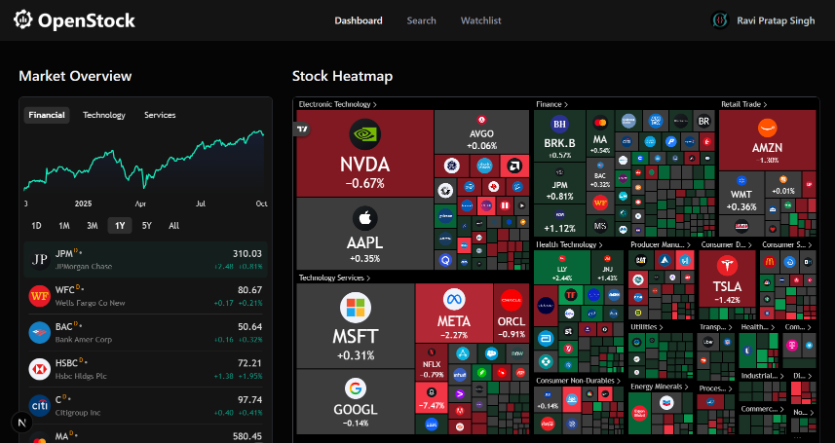
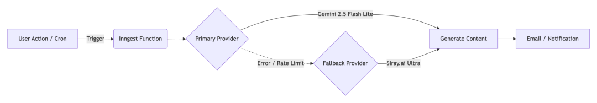

金融数据工具的格局长期以来很简单：Bloomberg Terminal 一年几万美元，TradingView 的 Pro 订阅年年续费，券商自带平台功能受限、导出不便。对个人投资者、金融专业学生、或者想拿真实项目练手的前端开发者来说，想要一个自己能跑、能改、能加东西的市场追踪工具，选择意外地少。
OpenStock 就在这样的缝隙里长了出来。

由 Open Dev Society 社区维护，基于 AGPL-3.0 协议，截至 2026 年 9 月，项目在 GitHub 上已获得16,000+ Stars、2,100+ Forks，被 HelloGitHub 收录并评分 10.0。定位一句话说清楚：开源的、免费的、代码完全在你手上的股票市场追踪平台。
一、它到底能做什么
行情与图表。股票搜索走 Finnhub API，个股详情页整合了 TradingView 的可嵌入组件——K 线图、高级图表、技术指标、基线图，都是付费终端里习惯的那套视觉语言。市场总览页用 TradingView 热力图展示涨跌分布，配合实时报价和 Finnhub 头条新闻流。
自选股与告警。每个用户的自选列表存在 MongoDB 里，按 userId + symbol 建复合唯一索引。Inngest 中有一个每 5 分钟运行的 cron 任务check-stock-alerts，检查用户设定的价格目标是否被触发。这意味着告警引擎运行在服务端，而不是依赖前端轮询。
AI 驱动的邮件系统。用户注册后，Inngest 触发app/user.created事件，调用 Gemini 生成个性化的欢迎邮件——结合 onboarding 时填写的国家、投资目标、风险偏好和偏好行业。之后每周一上午 9 点，weekly-news-summarycron 会根据用户自选股拉取当天相关新闻，生成个性化摘要邮件。此外还有一个check-inactive-users任务，每天 10 点运行，识别 30 天以上未活跃的用户并发送召回邮件。
情感分析（可选模块）。配置 Adanos API 后，个股详情页会多出一张情感卡片，聚合 Reddit、X.com、新闻和 Polymarket 上围绕该标的的跨源情绪快照。它不替代专业数据源，而是叠在之上的一层“市场在聊什么”的参考。
二、技术选型：一套完整的 Next.js 15 全栈参考
如果你是一个想找真实项目学习现代 Next.js 全栈开发的开发者，OpenStock 的代码本身值得读一遍。
前端层面。Next.js 15 App Router，用(auth)和(root)两个路由组做逻辑隔离，配合中间件做会话校验。UI 层是 shadcn/ui + Radix UI 原语，Tailwind CSS v4 的设计令牌直接写进 globals.css，暗色主题默认开启。技术分析文章指出，App Router 的 SSR 能力使首屏加载时间缩短40% 以上，对金融应用而言意味着用户无需等待全部 JavaScript 加载即可看到关键股价数据。Cmd/Ctrl + K 调出全局命令面板，搜索逻辑做了防抖处理，空闲时展示热门股票。
类型安全的数据层。TypeScript 在项目中实现了从 API 接入到 UI 展示的全链路类型保护。以 Finnhub 数据处理为例，系统首先通过接口定义标准化数据结构：
interface StockQuote {c: number; // 当前价格d: number; // 价格变化dp: number; // 价格变化百分比h: number; // 今日最高价l: number; // 今日最低价o: number; // 今日开盘价t: number; // 时间戳v: number; // 成交量}
这种强类型约束确保了从 API 响应到组件渲染的数据流一致性，有效避免了金融数据处理中常见的类型转换错误和精度丢失问题。
认证与持久化。Better Auth 走 email/password 方案，MongoDB adapter 做存储，session 启用了 cookieCache 减少数据库往返。MongoDB 的文档模型适合存储非结构化的金融数据和用户偏好设置，数据库包含users、watchlists、alerts三个主要集合。
事件驱动架构（最值得关注的一层）。OpenStock 用 Inngest 作为后台任务引擎，把“用户注册后的 AI 欢迎邮件”和“每周新闻摘要 cron”建模成事件流和定时任务，而不是塞进 API route 里同步执行。AI Provider 支持 Gemini（默认）、MiniMax 和Siray.ai切换，有 fallback 机制。
三、架构拆解：AI 路由与事件驱动
OpenStock 的架构文档中提供了一张 Mermaid 流程图，清晰展示了 AI 模型的智能路由逻辑：

这张图的核心信息是：系统不依赖单一 AI Provider。当 Gemini 出现错误或触发速率限制时，Siray.ai会立即接管，用户请求不会被丢弃。架构文档中明确写道：“Zero Downtime Guarantee. When Gemini wavers,Siray.aitakes over instantly.”
后台任务全景。根据lib/inngest/functions.ts的定义，项目目前包含四个核心后台任务：
实时数据处理的性能取舍。技术文章提到，项目采用混合同步策略：用户正在查看的个股使用 WebSocket 保持高频推送（1-5 秒更新），自选股列表中非活跃查看的股票采用指数退避轮询（30-300 秒动态调整）。这种策略使服务器负载降低了约35%。
四、部署：三条路径，按需选择
Docker Compose（最快）。仓库自带docker-compose.yml，两个服务：openstock和mongodb。MongoDB 用 mongo:7 镜像，有 healthcheck，数据挂在命名卷上。
git clone https://github.com/Open-Dev-Society/OpenStock.gitcd OpenStock#配置 .envdocker compose up -d mongodb && docker compose up -d --build
本地开发。需要 Node.js 20+，MongoDB 连接串（Atlas 或本地），Finnhub API key。pnpm dev起 Next.js，npx inngest-cli@latest dev起 Inngest 本地开发服务器，处理 workflows 和 cron。
云平台部署。项目已验证可部署到Vercel（默认）和Railway。Zeabur 也有社区维护的部署模板，已实现 19 次部署。
五、技术选型决策逻辑
项目在几个关键技术选择上的取舍逻辑值得单独说清楚：
为什么是 MongoDB 而不是 PostgreSQL？文档模型更适合存储非结构化的金融数据和用户偏好设置。金融数据的 schema 会随着数据源和市场结构变化而调整，MongoDB 的灵活 schema 比关系型数据库的事务特性更重要。
为什么选择 Next.js App Router 而不是 SPA？金融数据的时效性和首屏加载体验是关键考量。SSR 虽然增加了服务器负载，但获得了更好的用户留存率。React Server Components 结合 SWR 实现数据获取与缓存，在不引入复杂全局状态管理的前提下保持数据新鲜度。
为什么用 Inngest 而不是简单的 node-cron？Inngest 提供 durable execution，任务在失败后可以自动重试，且支持事件驱动模式。当用户注册事件触发时，欢迎邮件的生成、发送、失败重试都被 Inngest 托管，开发者不需要编写重试逻辑和任务持久化代码。
六、关于“开源替代”这件事
OpenStock 的 Manifesto 写得很直白：“我们生活在一个知识被隐藏在付费墙后面的世界。工具被锁定在订阅服务中。”
这种话在开源项目里并不少见。但 OpenStock 的区别在于，AGPL-3.0 的许可证选择本身就是一个信号：如果你修改、分发或者把它作为 Web 服务部署，必须以同样的许可证开源代码。这意味着任何人都可以把 OpenStock 拿去做二次开发，但不能把它变成另一个付费墙。
16,000+ Stars 和 2,100+ Forks 的数据说明，这个方向有真实需求。截至 2026 年 9 月，项目仍在持续更新，贡献者社区活跃。如果你是一个想自己掌控看盘工具的投资者，一个在找 Next.js 15 + Inngest + MongoDB 全栈实战项目的开发者，或者单纯对“开源能不能在金融数据领域跑通”这件事好奇——OpenStock 值得花 30 分钟跑起来看看。
在线演示：https://openstock-ods.vercel.app
GitHub 仓库：https://github.com/Open-Dev-Society/OpenStock